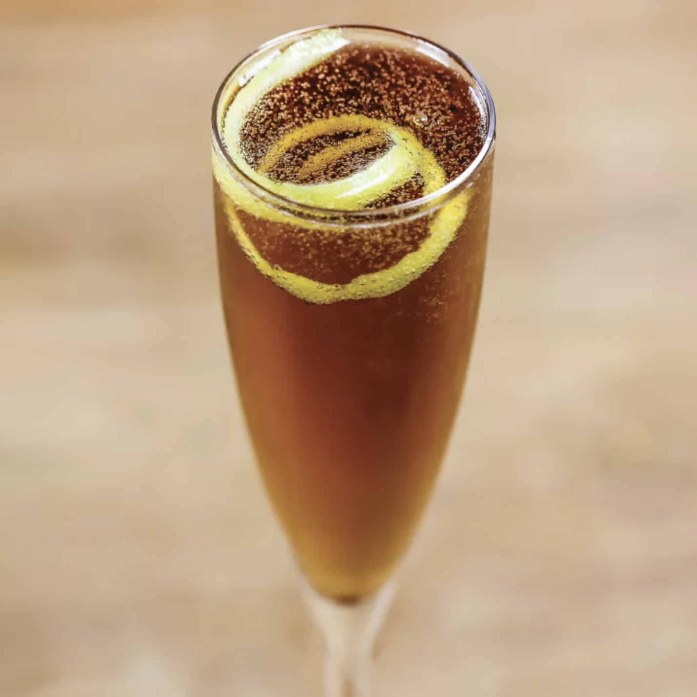

Taurus: Kir Royale

As a venusian ruled sign, Taurus is no stranger to the finer things in life. With Champange as an ingredient, this drink will certainly indulge your luxurious side.
Ingredients
- 1/2 ounce creme de cassis or Chambord
- Dry Champange (or other sparkling wine), to top
- Garnish: lemon twist
Steps
- Pour the creme de cassis into a Champange flute
- Top with the Champange
- Garnish with a lemon twist